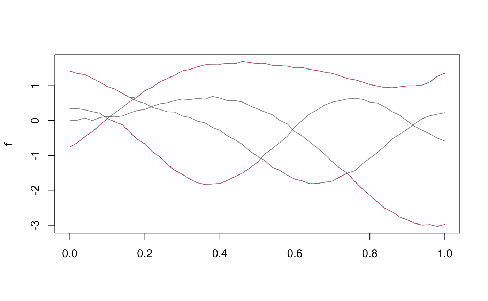
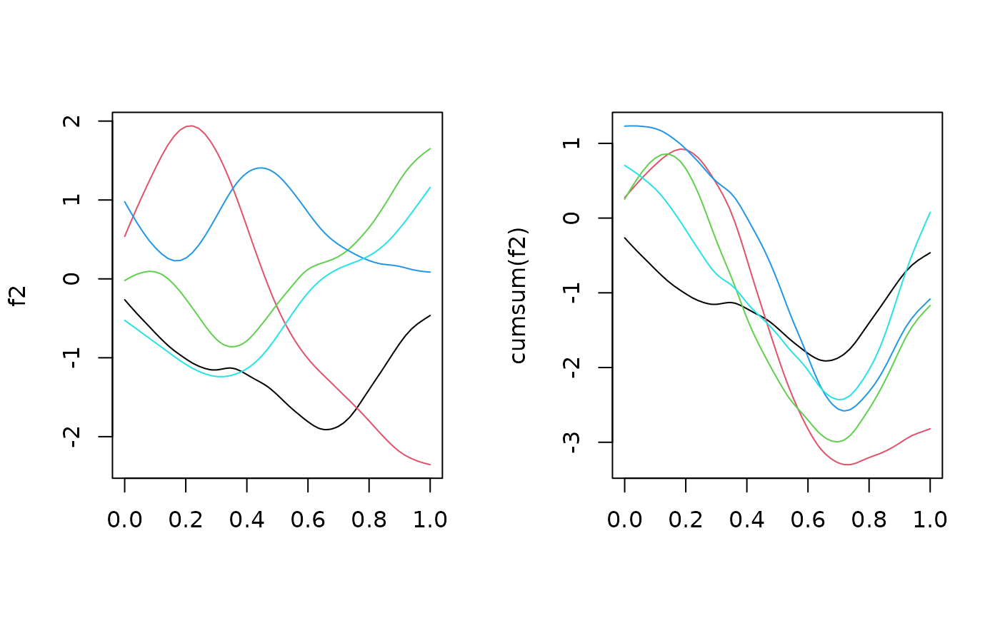

These define methods and operators that mostly work argval-wise on
tf objects, see ?groupGeneric for implementation details.
# S3 method for tf Ops(e1, e2) # S3 method for tfd ==(e1, e2) # S3 method for tfd !=(e1, e2) # S3 method for tfb ==(e1, e2) # S3 method for tfb !=(e1, e2) # S3 method for tfd Ops(e1, e2) # S3 method for tfb Ops(e1, e2) # S3 method for tfd Math(x, ...) # S3 method for tfb Math(x, ...) # S3 method for tfd cummax(...) # S3 method for tfd cummin(...) # S3 method for tfd cumsum(...) # S3 method for tfd cumprod(...) # S3 method for tfb cummax(...) # S3 method for tfb cummin(...) # S3 method for tfb cumsum(...) # S3 method for tfb cumprod(...) # S3 method for tf Summary(...)
| e1 | an |
|---|---|
| e2 | an |
| x | an |
| ... |
|
See examples below. Equality checks of functional objects are rather iffy and
not very reliable at this point. Note that max and min are not guaranteed
to be maximal/minmal over the entire domain, only on the evaluation grid used for
computation. With the exception of addition and multiplication,
operations on tfb-objects first evaluate them over their arg,
perform computations on these evaluations and then convert back to an tfb-
object, so a loss of precision should be expected, especially so if bases are small
or data is very wiggly.
#> [1] TRUE TRUE TRUE TRUE#> [1] TRUE#> [1] TRUE TRUE TRUE TRUE#> #>#> Min. 1st Qu. Median Mean 3rd Qu. Max. #> 99.70 99.80 99.90 99.86 99.90 100.00